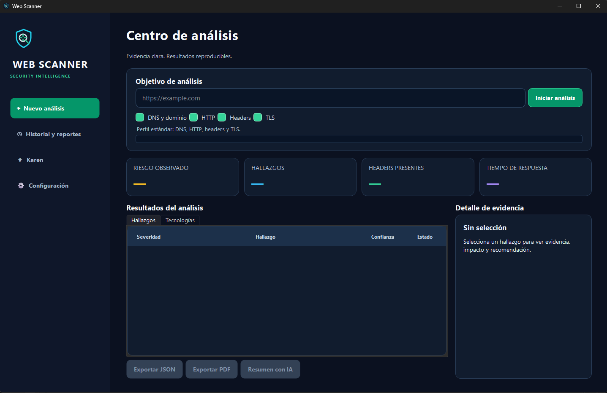

01 / NOMBRE Y RESOLUCIÓN
DNS
Consulta información pública asociada al dominio y presenta las respuestas observadas.
Registros y resolución visibleAUDITORÍA DEFENSIVA LOCAL-FIRST
Revisa DNS, HTTP, cabeceras de seguridad y TLS desde una interfaz de escritorio moderna.

VISTA DEL PRODUCTO 01 / 04MÓDULOS DE REVISIÓN
Comprobaciones observacionales y de bajo impacto para sistemas dentro de tu alcance autorizado.
01 / NOMBRE Y RESOLUCIÓN
Consulta información pública asociada al dominio y presenta las respuestas observadas.
Registros y resolución visible02 / RESPUESTA DEL SERVIDOR
Revisa respuestas, redirecciones e indicadores visibles de la infraestructura web.
Estado y recorrido de respuesta03 / CONFIGURACIÓN WEB
Identifica cabeceras de seguridad observadas o ausentes en las respuestas revisadas.
Cabeceras HTTP configurables04 / TRANSPORTE CIFRADO
Resume información observable del certificado y de la conexión de transporte.
Certificado y conexión TLSEVIDENCIA ANTES QUE SUPOSICIONES
Los hallazgos reúnen los datos necesarios para revisar una señal técnica: evidencia, severidad, confianza, estado y recomendación. Conserva el contexto y valida cada resultado antes de priorizar cambios.
Una observación no confirma por sí sola una vulnerabilidad.
Cómo interpretar los resultadosRespuesta HTTP recibida y revisada durante la comprobación.
Verifica la configuración en el contexto de la aplicación y su política de seguridad.
RECORRIDO DEL PRODUCTO
Abre cada captura para verla con más detalle. Las imágenes se cargan desde el proyecto.
UN FLUJO SENCILLO
Un proceso breve, siempre dentro del alcance autorizado.
Elige una descarga disponible o instala desde el código fuente.
Inicia la interfaz de escritorio o utiliza la CLI.
Confirma el objetivo y el alcance antes de iniciar.
Valida la evidencia y guarda el informe de forma segura.
ALCANCE Y RESPONSABILIDAD
No analices sistemas sin permiso. No uses la herramienta para evadir controles ni para obtener acceso indebido. Mantén cada comprobación dentro del alcance acordado.
Leer términos de usoCÓDIGO ABIERTO A LA REVISIÓN
Consulta el código fuente, las instrucciones del proyecto y las condiciones de uso.
Las redistribuciones deben conservar créditos a Web Scanner. Esta versión no puede comercializarse sin autorización.